La comida de la jornada, revisada
19 nov. · rama claude/comida-19nov · sin juntar con main. Probado a 1280 px en castellano y a 360 px en inglés, con el reloj movido a mano.
1 · Cambiar la hora de comer justo antes de comer no hacía nada
Al acabar el bloque de antes de comer, si cambiabas la hora de la comida (o lo que dura), la frase decía la hora nueva y la línea seguía con la vieja. La app daba la comida por «hecha» antes de empezar. Arreglado: ahora la comida se mueve, y en plena comida acortarla la acaba antes. Cambiar otra cosa a mitad de comida no la parte.
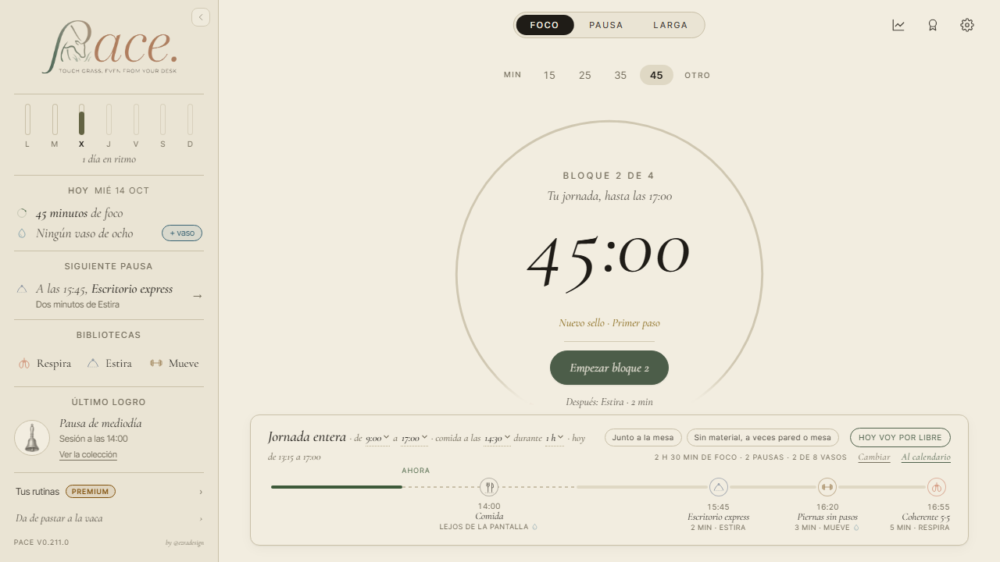
2 · Saltarte la comida la contaba entera y pintaba el bloque encima
Con la comida de 14:00 a 15:00, si empezabas el bloque a las 14:05 (o volvías a las 14:40), la línea seguía con la comida hasta las 15:00 y el bloque encima, y Estadísticas contaba una hora entera. Arreglado: la comida dura lo que duró: hasta que vuelves al foco.
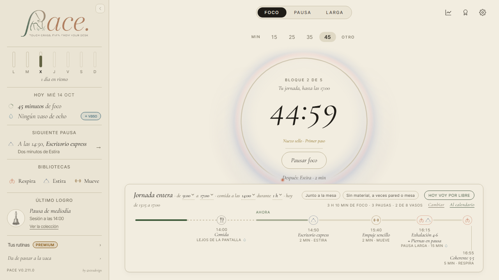
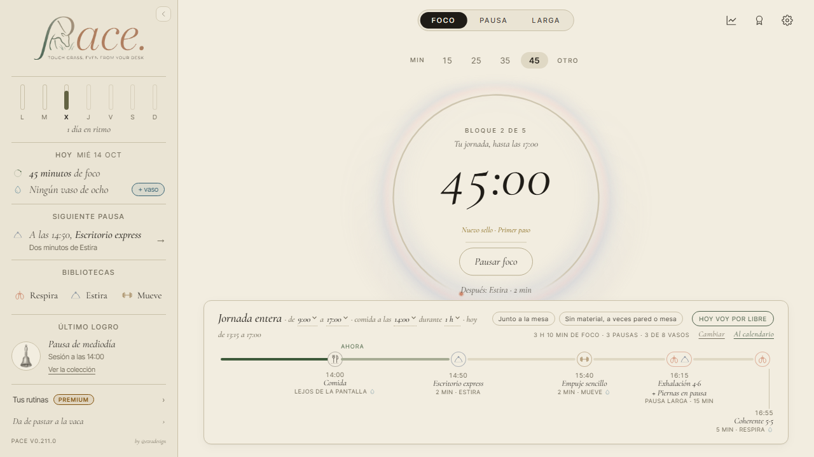
3 · Adelantar la comida con el primer bloque en marcha
Con el primer bloque del día corriendo, adelantar la comida cortaba ese bloque en la línea y ponía la comida «ahora» mientras el reloj seguía contando. Al acabar, la comida encogía. Arreglado: el bloque que corre se respeta y la comida va detrás, entera.
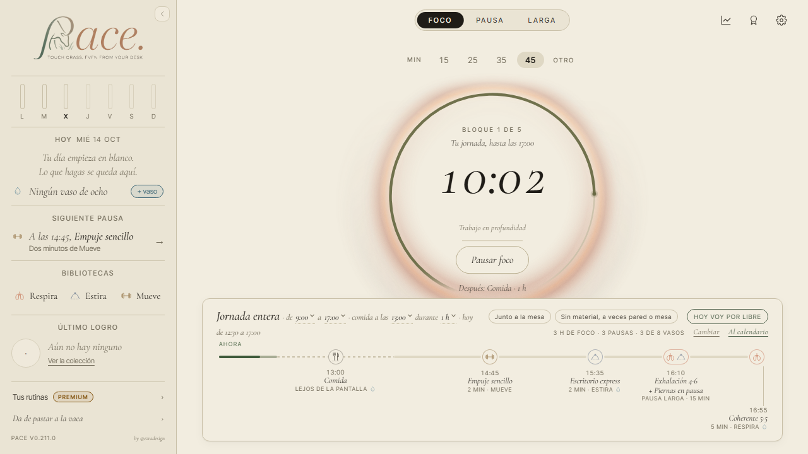
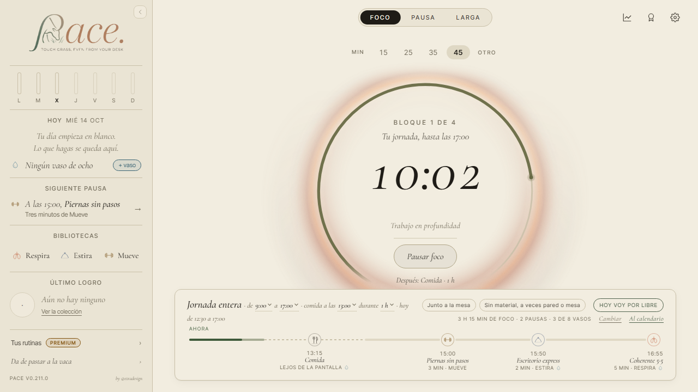
4 · La pausa de antes de comer desaparecía
Si al acabar el bloque de las 13:45 pulsabas «Ahora no» y «Empezar ya el bloque 2» en el mismo minuto, esa pausa se borraba de la línea y de Estadísticas, y la que salía como «saltada» era una de la tarde, antes de llegar. Arreglado: se queda en su sitio, como saltada.
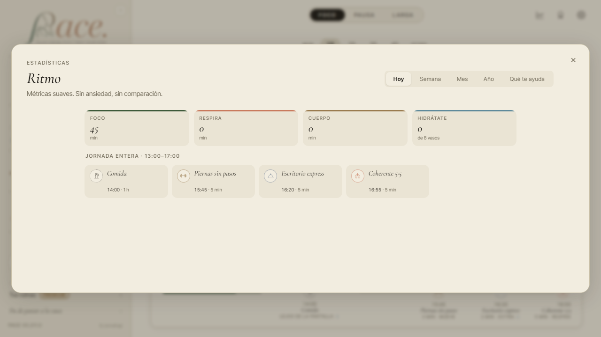
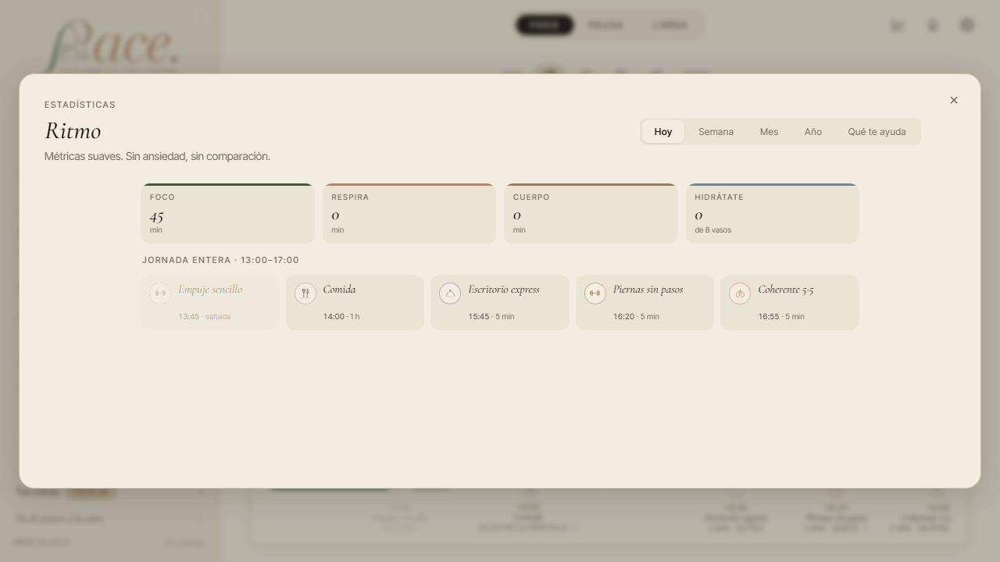
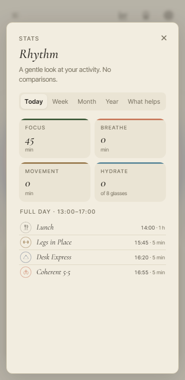
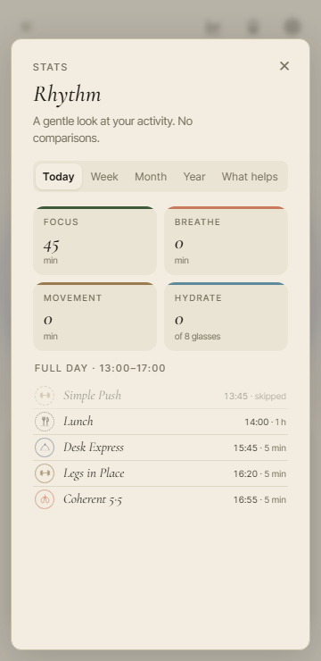
5 · «Seguir por libre» con la jornada cerrada
Pasada tu salida, el botón del aro dice «Seguir por libre», pero arrancaba un Foco en el acto y la tarjeta seguía en «Jornada cerrada». Elegiste la A: arreglado. Ahora hace lo mismo que «Hoy voy por libre»: vuelve la home normal, con las actividades, y el aro queda listo en Foco manual, sin arrancar.
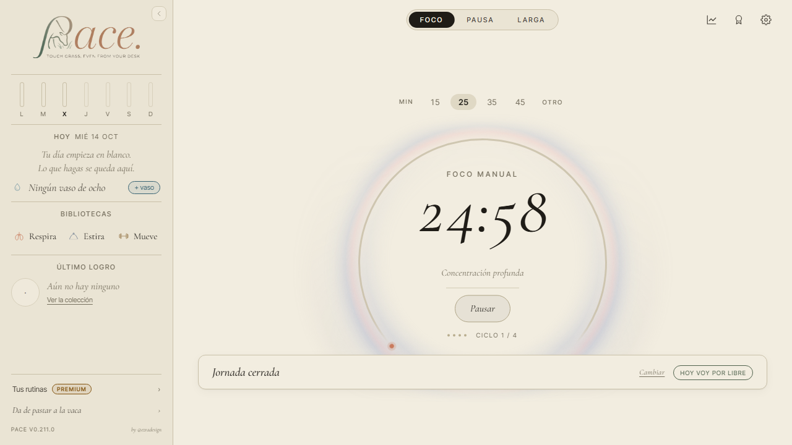
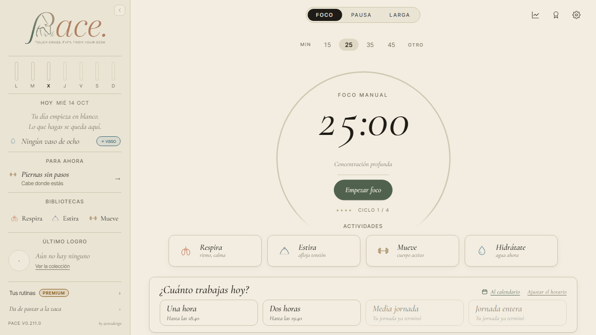
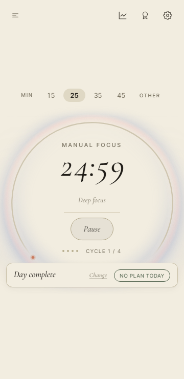
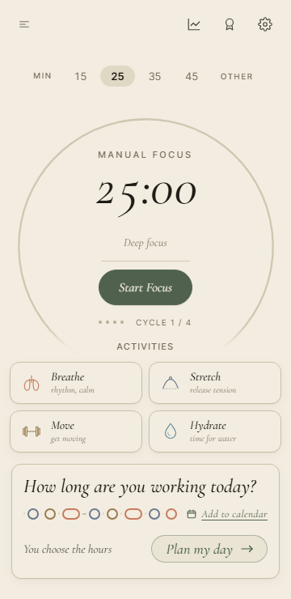
Preguntas para ti
P1 · «Cambiar» a media mañana borra lo hecho. Para apagar «comes» o tocar las horas con el día ya empezado, «Cambiar» te lleva a la pregunta. Al elegir otra vez «Jornada entera», el día vuelve a empezar: los bloques de la mañana salen de la línea y vuelve a «Bloque 1 de 7».
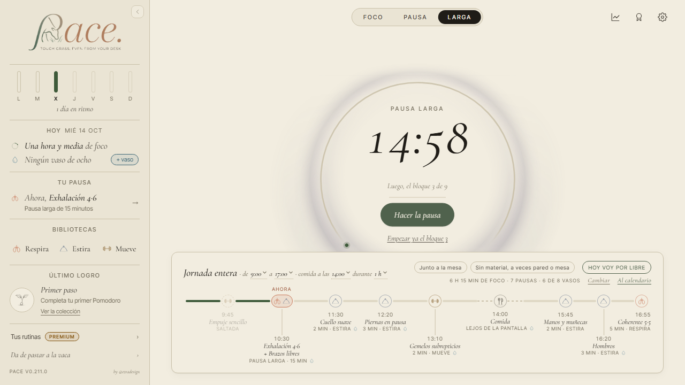
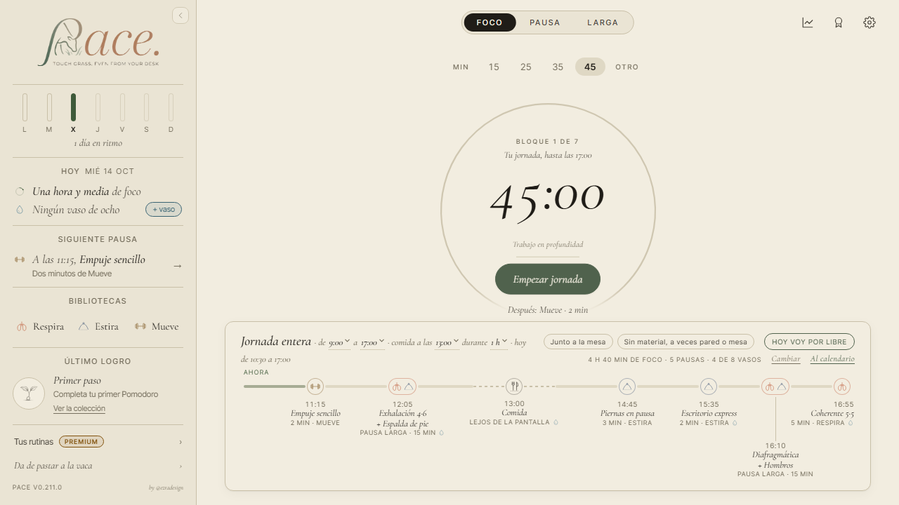
A Lo hecho se queda: la línea sigue con la mañana y la cuenta sigue en el bloque 3. Recomendada
B Como ahora: elegir otra vez es empezar de cero desde ahora.
P2 · Cómo se ve una comida que te saltas. Ahora queda en la línea con lo que duró (o 0 min) y pone «Lejos de la pantalla».
A Pone «saltada», como las pausas. Recomendada
B Desaparece de la línea.
C Como ahora.
P3 · ¿La comida que te saltas vuelve más tarde?
A No: saltada es saltada; si quieres comer luego, mueves la hora. Es lo que hace ahora. Recomendada
B Lo que queda de su hora se sirve al acabar el bloque.
P4 · «Ir a comer» antes de su hora. Si el bloque acaba a las 13:45 y la comida es a las 14:00, pulsar «Ir a comer» no mueve la comida: la línea sigue diciendo 14:00.
A La comida empieza al pulsar y dura lo de siempre. Recomendada
B Sigue a su hora, como ahora.
P5 · Ya ha pasado la hora de comer y no has vuelto. A las 15:10 la línea sigue con «ahora» en la comida y el bloque a las 15:00. Tras una pausa, en cambio, el día ya se lee desde ahora.
A Igual que tras una pausa: el resto del día, desde ahora. Recomendada
B Como ahora: se recoloca al pulsar «Empezar bloque».
Para contestar basta con las letras, por ejemplo «P1 A, P2 A, P3 A, P4 A, P5 A».